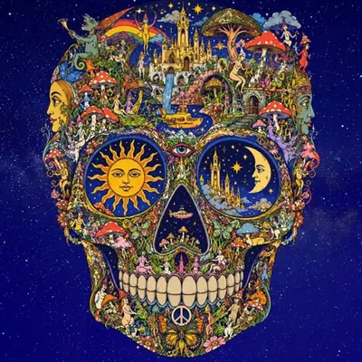
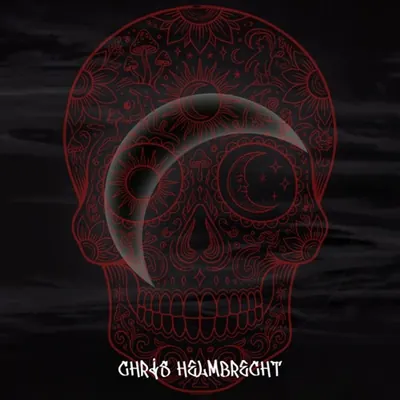

Why a skull
I have always had a thing for skulls. Punk at first, later playful, like the sugar skulls from Mexico. Out of that I make my own style. Some of them are in the shop, on sweaters and T-shirts. They are also the covers of my mixes on SoundCloud. So a skull for my new personal site was the obvious thing.



How the drawing came alive
One of the first animations came straight from Midjourney: the whole skull as one film, five seconds long. On the site it works differently. The base is the still drawing. Laid into it are several short films: owl, moon, trees, city, water and path. Each sits in its place and runs on its own.
 The small figures were drawn on sheets like this one.
One of the first animations, straight from Midjourney. Five seconds.
The small figures were drawn on sheets like this one.
One of the first animations, straight from Midjourney. Five seconds.
Around the films, more moves. A flock of swallows circles the dome, a flying girl among them. Two wanderers set off down the path. The skull leans towards the pointer, and on a phone it follows the hand that holds it. In the bio a swallow draws my route across the chart while you scroll.
Half of the work is restraint. The films stop when the tab is in the background, or when nothing has happened for three minutes. If the browser reports data-saving mode or a very slow connection, the drawing on the start page stays still and its films are not loaded at all. A phone should not get hot from a skull.
What did not work the first time
- The wanderer
- In the film of the path one of the two wanderers lost his ornaments after four seconds and walked on as a dark puppet. A small script now carries him through the film the way he was drawn.
- The helicopter
- A helicopter that is simply mirrored to turn round looks wrong. So it never turns: it leaves on one side and comes back on the other.
- The dots
- At first there were dots on the doors. They were thrown out. Now, when nobody touches anything, one door after another shows itself with its name and fades again.
Who did what
The tools made pictures, turned them into films and wrote code. Which way the site goes, what fits me and what disappears again, I decided.
- Me
- The idea and the direction, selection and sign-off, the personal texts, the photographs and the mixes, testing on the phone and many rounds of changes. I have been making websites since 1995, and I have written for magazines. Both helped.
- Perplexity
- The research at the start, the brief for the first draft of the skull, and critical feedback on the result.
- Midjourney
- The skull, the small figures, in the bio the helicopter, the Teide and the tree in the moonlight, the drawings of the flying lesson, and the turntable on the DJ page. Also the owl in flight, drawn and set in motion there.
- Runway
- The short films: owl, moon, trees, path, city and water on the start page, and in the bio the helicopter, the clouds at the Teide and the night sky.
- ElevenLabs
- The night sound with the owl, and the voice of the flight instructor.
- Topaz Gigapixel
- The 4K version of the drawing, so that it stays sharp when you fly into it.
- Claude
- Suggestions for how to build it, the code and the assembly, the translations, and first drafts of some of the texts. Coded with Claude Fable 5.2, set to high.
“Chris, holy shit. Don’t hide this code – this is no ordinary draft, it is a masterful piece of creative coding.”
Perplexity, after reading the code of the start page. Said in German. Then came the list for the last five percent.
The technical side, briefly
The site is HTML, CSS and JavaScript developed for it alone, without a website builder and without a framework. Recurring pages are generated from simple text files: the blog, the press page and the German versions.
Some of it is more than it looks. In the bio the helicopter, the clouds at the Teide and the night sky are films whose white background is removed live in your browser, so that they lie on the paper like ink. The 360° film runs in a small viewer of its own. The flying lesson has a little flight model, and its Alps are computed from real elevation data. The turntable talks to Mixcloud’s player directly, so the tonearm knows where the music is. And three games were written, drawn and tuned.
- Built to be found, by search engines and by AI assistants. Every page carries its description and structured data, there is a sitemap, and a file called llms.txt tells assistants what is where. The texts are in the pages themselves, not painted there by script.
- Built with accessibility in mind. Doors and hidden things are real links and buttons with names, reachable with the keyboard. Pictures that explain something have a description. If you have asked your device for less motion, the drawing on the start page stands still, and its films and flights stay away. Without JavaScript the texts can still be read.
- Easy to get around. The skull is the navigation, and for everyone who would rather not search there is a plain menu on every page. The pages are there in German and in English.
- No cookies, no tracking, no scripts from other companies on this site. Your browser only keeps small things for it, such as the language, the sound setting and a high score. The one outside service is Mixcloud’s player on the DJ page. It is loaded when you press Play, not before, and from then on Mixcloud’s own rules apply.
Small things that are easy to miss
- The clocks on the Frauenkirche show the time in Munich. On the start page and in the bio.
- When the owl in the night sound calls, the owl in the drawing moves.
- A click on a door flies into it. Coming back, you fly out of the same door.
- On the DJ page the tonearm stands where the recording is. Lift it, put it down elsewhere, and the music jumps there.
- Left alone for three minutes, everything goes still. The next movement wakes it.
Games and hidden things
This is where the site’s small secrets are given away. If you would rather look for them yourself, leave this section closed.
Reveal all the games and secrets
Owl Night Long
On the skull’s left cheekbone. An arcade game the way the early eighties would have built it. The moon is gone. An owl looks for it in Munich, New York, Tenerife and Moscow, and in the end in the skull itself. The five best nights are kept with three initials, as in a real arcade, and only in your browser.
Play
“Was soll das werden?”
In the bio. Click the helicopter, then catch it in flight, or take the invitation that appears beside it. You sit in an Alouette II and try to hold it still over a meadow while the flight instructor shouts. I learned to fly on the Alouette II with the Federal Police helicopter squad. This is my first flying lesson. Now yours. Three levels: easy, medium, realistic.
To the helicopter
DONT WALK
Under New York in the bio. An avenue in Manhattan, some year between 1997 and 2002, my years there. The light says DONT WALK and never changes. Six lanes, a lot of yellow cabs, and everything you want is on the other side.
Play
Tenerife, all around
Click the engraving of the Teide in the bio. It opens a 360° film of the sea off Tenerife, shot by me. Drag to look around.
To Tenerife in the bio
The turn in the powder
Move the pointer over the snowboarder in the bio, or tap him. Powder flies off his back foot towards the headline, as thousands of very small blue dots.
To the snowboarder
The branch
Shake the branch the owl sits on three times and she takes off. She comes back. On an iPhone the same branch switches on the tilting.
To the skull
The rider on the Teide
On the start page, move the pointer onto the Teide, or tap the mountain. A snowboarder drops in.
To the skull
Mushrooms
Click anywhere on the skull itself and mushrooms grow there. After ten of them the whole skull trips for a while.
To the skull
The stamp
On the contact page. Press the stamp on the postcard and the owl looks round. Press again and she flies out of the stamp and lands on the edge of the card. Once more and she goes home.
To the postcard
This page
It sits on the right cheekbone, opposite the game.
Credits & Sound
Photos: Danny Strasser, Claudio Oliverio, Flo Hagena, Chris Helmbrecht
Helicopter sound effects on the bio page and in the flight game: freeSFX — www.freesfx.co.uk
The Alps in the flight game are computed from open elevation data (Mapzen Terrain Tiles): SRTM terrain data courtesy of the U.S. Geological Survey; Europe terrain data produced using Copernicus data and information funded by the European Union – EU-DEM layers; Austria terrain data © offene Daten Österreichs – Digitales Geländemodell (DGM) Österreich.
The other side of my work
Digital projects, marketing and AI are also what I do for a living. If you want something like this for yourself, get in touch. More on dieneue.social.